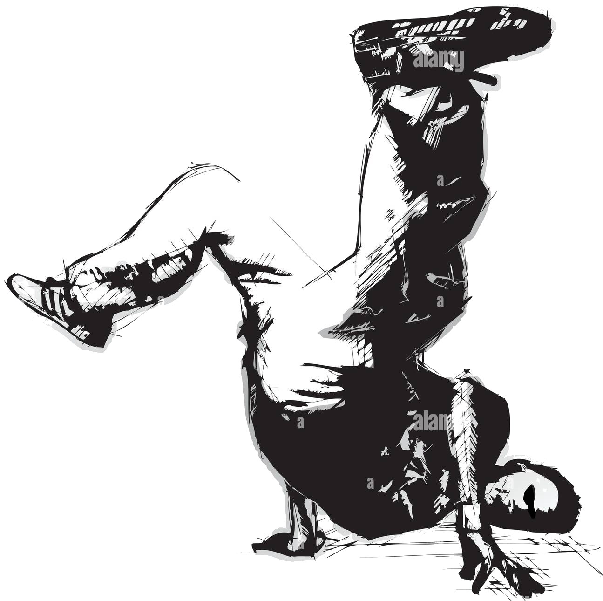

Breaking has evolved into a global sport, featured in international competitions and set to debut in the Olympic Games. It demands strength, stamina, precision, and strategic flair, making it a true test of physical and mental skill.
Breaking, often called breakdancing, is a dynamic street dance style that began in the 1970s in the Bronx, New York. It combines rhythm, creativity, and athleticism through powerful moves like toprocks, footwork, freezes, and spins—all performed to the beat of hip-hop music.

Beyond the athleticism, breaking is a powerful form of artistic expression. Dancers tell stories, showcase individuality, and connect with culture through their movements—each performance is a unique blend of style, soul, and rhythm.
Breaking originated in the Bronx, New York, during the 1970s. It emerged from the hip-hop culture, influenced by various dance styles, including funk and martial arts. Pioneers like DJ Kool Herc and Afrika Bambaataa played crucial roles in its development, leading to its global spread and recognition.
Breaking competitions, known as "battles," showcase dancers' skills in a head-to-head format. Judges evaluate creativity, technique, and style. Major events like the Red Bull BC One and the Battle of the Year attract top talent from around the world, celebrating the art and athleticism of breaking.
| Popular Breaking Music | ||||
|---|---|---|---|---|
| Song Name | Artist | Year | Genre | Audio |
| Apache | The Incredible Bongo Band | 1973 | Funk | |
| Bboy | Macklemore | 2005 | Rap | |
| Burn Remix | Mobb Deep | 2001 | Hip Hop | |